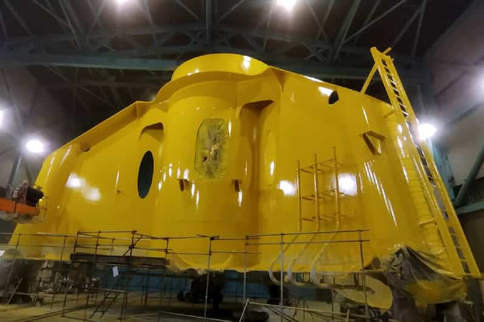
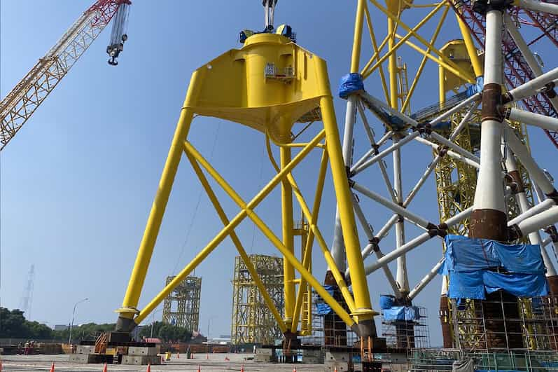
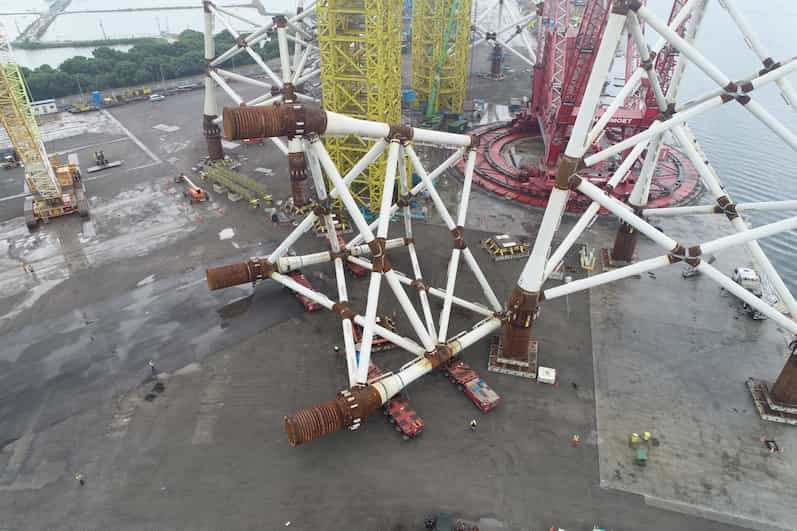
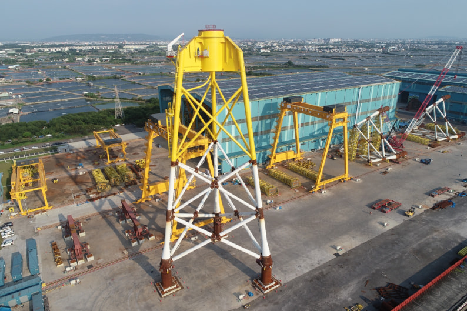
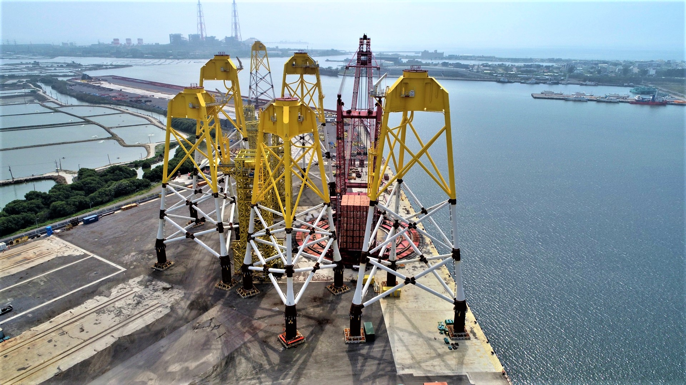

In support of the government’s offshore wind energy and energy transition policies, SDMS has specialized in the manufacturing of offshore wind jacket foundations. Our services include mega/semi assembly, coating, and inspection.
The images below show both mega/semi assembly and jacket foundations：

Transition Piece, TP

Upper Block, UB

Lower Jacket, LJ

Jacket
Transition Piece, TP
Upper Block, UB
Lower Jacket, LJ
Jacket
Marine current energy and wave energy represent emerging global trends in renewable energy, with most technologies in the research, development, and testing phases. SDMS is fully committed to supporting the marine renewable energy sector. By engaging in early-stage design, development, and technical studies, SDMS continues to build practical experience and capabilities to pave the way for future implementation.
Greater Changhua Offshore Wind Farm
From the ground up, SDMS has integrated resources across the CSC Group and domestic suppliers to comprehensively enhance welding and fabrication technologies. By meeting international welding inspection standards and global HSE (Health, Safety, and Environment) requirements for offshore wind power generation, SDMS successfully delivered six 100% localized jacket foundations—becoming the first company in Taiwan to complete the production of such structures.

Zhong Neng Offshore Wind Farm
Building on the success of previous project, SDMS undertook the jacket foundation fabrication for Zhong Neng Offshore Wind Farm. Production officially began in October 2021, and all 31 jacket foundations were successfully delivered by February 2024.